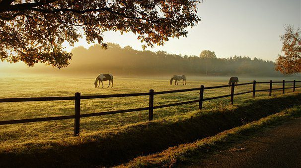

Um pouco sobre o campo e a cidade

qual a importancia?
A integração entre campo e cidade é uma via de mão dupla que fortalece os dois lados. Contribui também para uma sociedade mais justa, resiliente e conectada com seus recursos e sua cultura.

Quando começou essa conexão?
A conexão entre campo e cidade existe desde que a agricultura permitiu a formação das primeiras cidades, há cerca de 6.000 a 10.000 anos. Essa relação foi se aprofundando e se transformando conforme a humanidade evoluiu

Carreira pós Harry Potter
Daniel (Harry Potter) Após o fim da saga, Daniel procurou papéis variados e desafiadores para se afastar da imagem do "menino bruxo". Atuou em filmes como A Mulher de Preto, Swiss Army Man (Um Cadáver para Sobreviver), Imperium e a série Miracle Workers. Também se destacou no teatro, incluindo uma elogiada atuação em Equus. Rupert (Rony)Rupert optou por papéis mais alternativos no cinema e televisão. Atuou em produções como Into the White, Moonwalkers, e na série Servant, de M. Night Shyamalan. Também se envolveu em teatro e projetos de produção. Emma (Hermione)Emma teve sucesso tanto no cinema quanto fora dele. Atuou em As Vantagens de Ser Invisível, Bling Ring, Noé, e como Bela no live-action de A Bela e a Fera da Disney. É também uma conhecida ativista pelos direitos das mulheres e foi embaixadora da ONU Mulheres, onde lançou a campanha “HeForShe”.